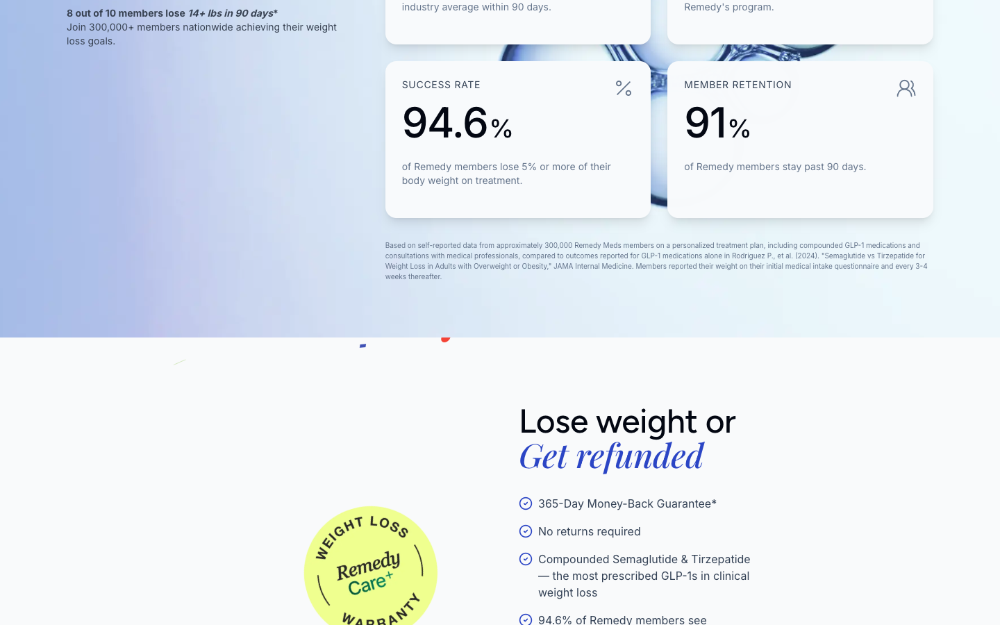
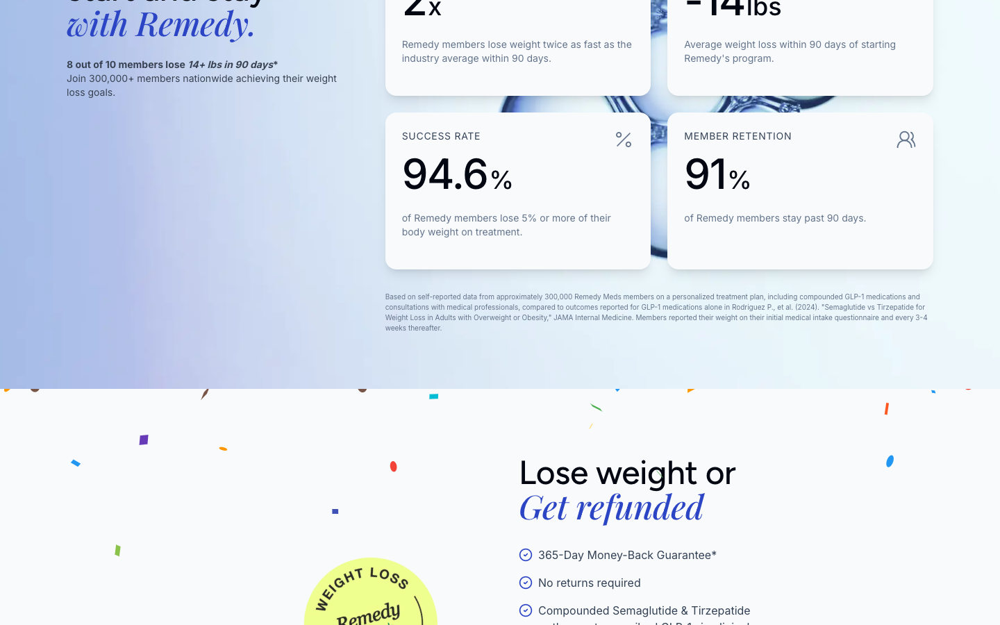
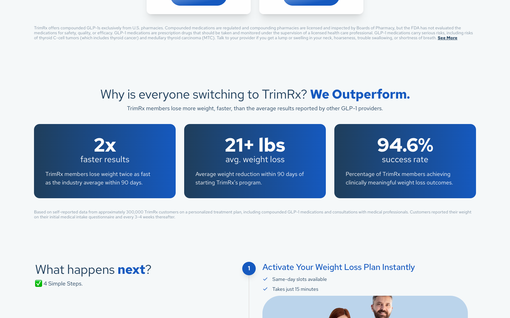
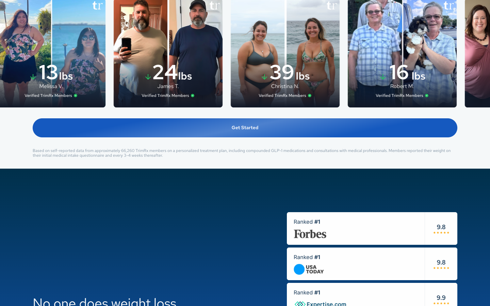

← All Gimme reports · FTC tip evidence pack · Filing runbook
offers.trimrx.com/offer-v2 are not independent TrimRx clinical results. They are brand-swapped lifts of Remedy Meds marketing copy that is still live on Remedy campaign pages today — including the same “self-reported… approximately 300,000… intake questionnaire and every 3–4 weeks thereafter” methodology boilerplate.
TrimRx’s offer-v2 also still serves the older Remedy affiliate LP shell (“America’s #1 Most Trusted,” “We Outperform,” vial-box hero, Weight Loss Warranty seal) that Google continues to associate with Remedy campaign URLs even after Remedy redesigned its public hero. The stats travel with the cloned template — they are not TrimRx-measured data.
remedymeds.com/?rm_campaign=first100 and ?rm_campaign=BWLM no longer render the dark-blue “America’s #1 Most Trusted” hero (redesigned to “willpower problem”), but they still publish the identical efficacy block (2x / 94.6% / ~300k self-report). Google’s index still titles those same campaign URLs with the old template (“America’s #1 Most Trusted GLP-1 Program” / “clinically meaningful weight loss outcomes” / “refund you every penny”). TrimRx frozen that older shell on offer-v2 and kept the numbers.
1. Side-by-side claim table (live 2026-07-30)
| Claim element | Remedy Meds (live) | TrimRx offer-v2 (live) |
|---|---|---|
| Speed superiority | “Remedy members lose weight twice as fast as the industry average within 90 days.” | “TrimRx members lose weight twice as fast as the industry average within 90 days.” / “2x faster results” |
| Success rate number | 94.6% of Remedy members… | 94.6% success rate / Success Rate Nationwide! |
| Methodology boilerplate | “Based on self-reported data from approximately 300,000 Remedy Meds members… reported their weight on their initial medical intake questionnaire and every 3-4 weeks thereafter.” (+ Rodriguez et al. JAMA cite on Remedy) | Under “We Outperform”: “Based on self-reported data from approximately 300,000 TrimRx customers…” — same intake / every 3–4 weeks language. (Elsewhere on the same page a second footnote uses 66,260 — inconsistent with the 300k clone.) |
| Warranty framing | Weight Loss Warranty / money-back guarantee language on Remedy LPs | “Weight Loss Warranty” / “refund you every penny” / 5-Month Weight-Loss Guarantee |
| Layout note | Current Remedy homepage redesigned (“willpower problem” hero) but same stats block still live under “Why members start and stay with Remedy” | Older full affiliate-style template still live on offer-v2 (“America’s #1 Most Trusted,” “We Outperform,” vial-box hero) — matches prior Remedy affiliate LP pattern indexed on campaign URLs |
Sources captured 2026-07-30:
- Remedy: remedymeds.com/?rm_campaign=GEO100 (same claims also on homepage / tryremedy.co)
- TrimRx: offers.trimrx.com/offer-v2
2. Exact wording quotes
Remedy (live)
TrimRx offer-v2 (live)
- Exact same success rate to one decimal place (94.6%) as Remedy.
- Exact same comparative claim (“twice as fast as the industry average within 90 days”).
- Near-identical methodology paragraph, including the same ~300,000 cohort size Remedy uses for Remedy members — re-labeled as TrimRx customers.
- Same LP shell TrimRx still runs (“America’s #1 / We Outperform / Weight Loss Warranty”) matches the old Remedy affiliate template Google still associates with Remedy campaign URLs.
3. Screenshot comparison
Remedy live — 2x / 94.6% stats block

remedymeds.com/?rm_campaign=GEO100 · 2026-07-30 · “twice as fast as the industry average” + 94.6%
TrimRx offer-v2 — same claims with brand swap

offers.trimrx.com/offer-v2 · 2026-07-30 · “We Outperform” · 2x · 94.6% · self-reported ~300k footnote
Remedy — self-reported methodology footnote

Same intake / every 3–4 weeks language
TrimRx — 300,000 “TrimRx customers” footnote (clone of Remedy’s 300k)

Same sentence as Remedy with brand swapped to TrimRx and cohort size left at ~300,000
TrimRx — secondary inconsistent footnote (66,260)

Same intake / 3–4 weeks boilerplate with a different n — further undermines that either number is a clean TrimRx study result
TrimRx hero still on older Remedy-style template

“America’s #1 Most Trusted,” 94.6% badge, Weight Loss Warranty seal — layout pattern of Remedy’s prior affiliate LP (Remedy’s public homepage has since redesigned; stats block above remains)